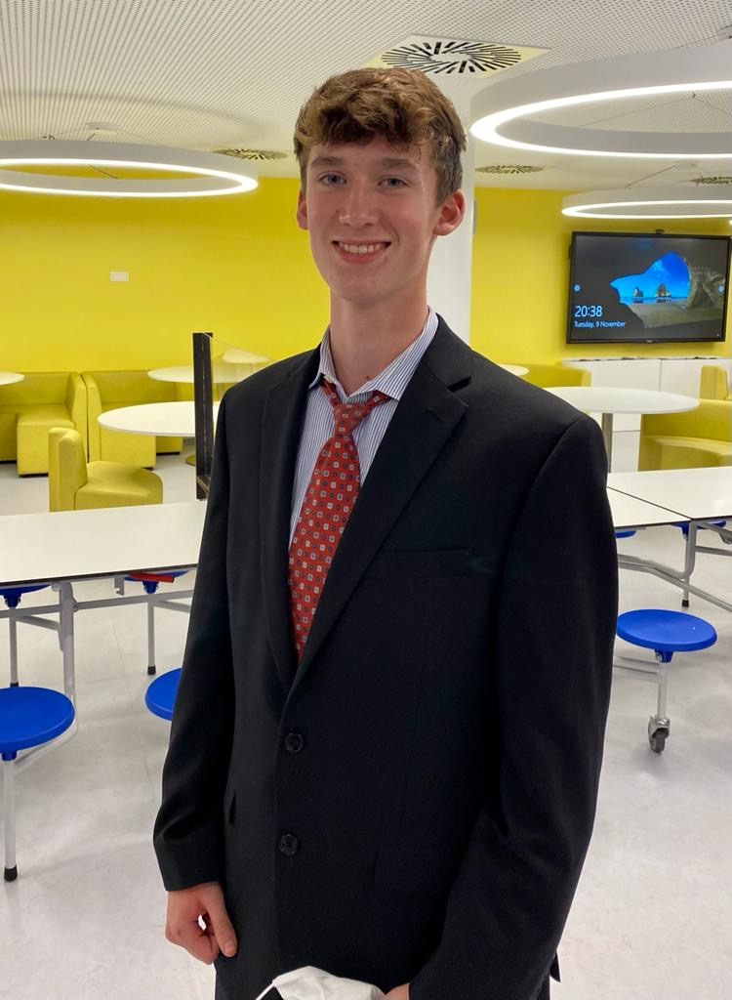
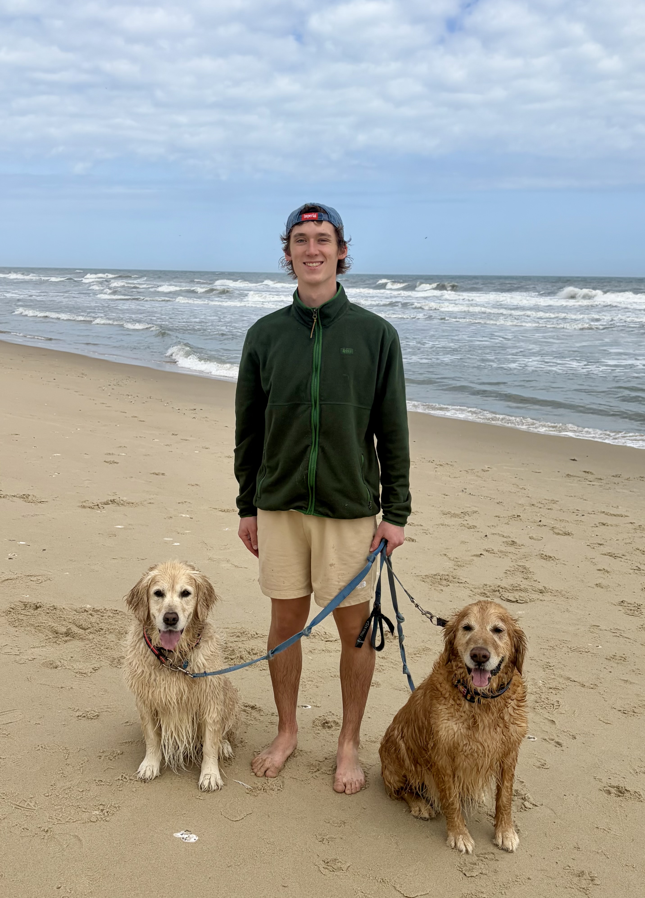

CS Student · CU Boulder · Dec 2026
Welcome! I'm a computer science student at CU Boulder with a Philosophy minor, expected to graduate in December 2026. Whether I'm debugging a backend API at midnight or debating Kant in a philosophy seminar, I bring the same curiosity and drive to everything I do.
My path to CU wasn't a straight line. I transferred from Wake Forest University, a move that tested my adaptability and made me a stronger student. I earned Dean's List recognition at both institutions, and I carry that resilience into every project I take on.
One of the experiences that shaped me most was working at the U.S. Embassy in Brussels, where I coordinated logistics for over 10,000 pieces of government property while collaborating daily in English, French, and Dutch. That international exposure gave me a perspective on teamwork and communication that most developers my age haven't had.
On campus I'm active in the Game Dev Club, AI Club, and Alpine Club, and I compete in intramural basketball when I'm not out hiking or climbing. My philosophy background sharpens my critical thinking, and my broad CS coursework (Quantum Computing, AI) reflects a genuine fascination with where the field is heading.
This portfolio is my professional home on the web: a place where recruiters, hiring managers, and curious visitors can explore the projects I've built, the experiences that shaped me, and the values I bring to a team. Take a look around, I'd love to connect.


A snapshot of my education, experience, and technical skills.
Computer Science Student
What I do beyond the keyboard, the pursuits that shape who I am.
As a member of CU's Alpine Club, I spend as much time outdoors as possible: skiing Colorado's backcountry, sport climbing at local crags, and logging miles on mountain trails. My passion for hiking directly inspired the Hiking Trails Review API project, proving that the best technical ideas often come from the things you love most. The outdoors teaches patience, risk assessment, and perseverance which are skills that translate directly into engineering.
I have been volunteering at animal shelters throughout my life, in Virginia, Colorado, and even Belgium during my time abroad. My tasks have ranged from feeding and socializing animals to helping out with adoption events. The fact that this commitment has traveled with me across three different locations shows that it's a genuine part of who I am.
I'm an active member of CU's Game Development Club, where students collaborate to design and build original games from scratch. This is where creativity meets engineering as every session involves UX thinking, visual design decisions, and collaborative problem-solving under real constraints. Game development has expanded my appreciation for how users interact with software and has given me exposure to collaborative development workflows that mirror professional team environments.
Work I'm proud of, from deployed apps to international experience.
A full-stack student productivity platform built with Node.js, Express, PostgreSQL, Handlebars, and Docker that is deployed live on Render. I designed the database schema from the ground up, architecting relationships between users, assignments, calendar events, and study groups. The app features social functionality that lets students form groups and collaborate. This was my most ambitious end-to-end project, touching everything from raw SQL to cloud deployment.
🔗 View Live SiteA responsive personal website featuring an interactive calendar interface built with HTML, CSS, JavaScript, Bootstrap, and PostgreSQL. Users can dynamically create and edit events through DOM manipulation, with all data persisted to a backend database. This project deepened my understanding of front-to-back data flow and reinforced how thoughtful UI design dramatically improves usability. The calendar's event management was implemented without any calendar libraries, but fully from scratch.
🐙 View on GitHubA RESTful API with full CRUD functionality built using Node.js, Express, PostgreSQL, and Docker. The project lets users create, read, update, and delete trail reviews and was directly inspired by my personal love of hiking. This project was a deliberate bridge between a personal interest and a technical skill, demonstrating that good software often starts with a genuine problem to solve. It shows API design principles, database integration, and containerization in practice.
📸 View ScreenshotCoordinated logistics for more than 10,000 pieces of U.S. government property in a high-accountability international environment. Working fluently across English, French, and Dutch, I collaborated daily with colleagues from multiple countries and government agencies. This experience gave me a rare perspective on professional communication, cross-cultural teamwork, and precision under pressure.
Earning Dean's List recognition at both CU Boulder and Wake Forest University, while navigating a cross-country transfer, demonstrates consistency, academic discipline, and the ability to perform at a high level even in unfamiliar environments. My coursework spans Quantum Computing, Human-Computer Interaction, and Artificial Intelligence, reflecting broad intellectual curiosity across the CS spectrum. My Philosophy minor further sharpens my analytical and written reasoning skills, which I apply directly to system design and documentation.
Connect With Me
Find me across platforms — each one tells a different part of my story.
LinkedIn
My primary professional hub. Visitors will find my full work history, education, endorsements, and skills. This is where recruiters and hiring managers can reach me directly, and where I stay current with industry conversations. If you're looking to connect professionally, LinkedIn is the place to start.
Visit ProfileGitHub
Where all my code lives. Visitors can browse repositories for StudyBuddie, the Hiking Trails API, my calendar app, and more. My commit history and contribution graph reflect consistency, clean code habits, and active development. For any technical interviewer or curious engineer, this is the most direct window into how I actually build software.
View ReposHandshake
A platform designed specifically for college students and the recruiters who hire them. My Handshake profile highlights my academic background, technical skills, and relevant work experience. It also signals that I am actively and intentionally searching for internships and full-time software engineering roles, making it easy for university recruiters to find and reach out to me directly.
View Profile